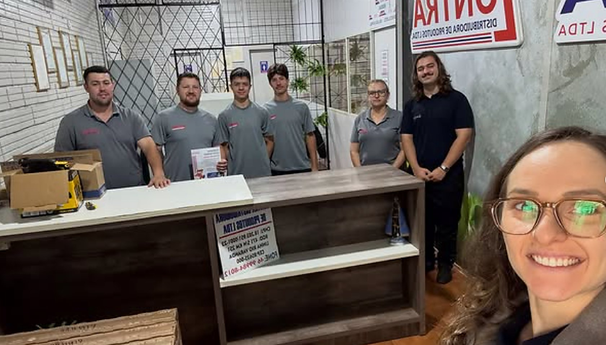

Recrutamento e seleção
Curadoria e estruturação de vagas: definição de perfil, divulgação, triagem, entrevistas, avaliação de evidências, parecer e apoio à decisão.
de Trabalho.
A pergunta que esta frente responde: como contratar e administrar pessoas com segurança e organização? Ajudamos a empresa a trazer as pessoas certas e a sustentar relações de trabalho organizadas, claras e seguras.

Mais qualidade nas contratações, menos improviso nas rotinas e maior segurança na relação entre empresa, gestores e colaboradores.
Empresas sem RH estruturado, com dificuldade de contratação, rotatividade, processos trabalhistas, admissões desorganizadas, falhas nas rotinas de pessoal ou dependência excessiva de conhecimentos informais.
Responda com o cenário real, não com o desejado. Ao final, você vê a pontuação da sua empresa neste tema e pode acessar o resultado completo, com os pontos de atenção.
A mesma metodologia sustenta as frentes da Evolve. Os prazos são definidos no alinhamento inicial, conforme o porte e o estágio da sua empresa.
Curadoria e estruturação de vagas: definição de perfil, divulgação, triagem, entrevistas, avaliação de evidências, parecer e apoio à decisão.
Organização ou terceirização das rotinas admissionais, jornada, benefícios, férias, desligamentos, documentos e controles.
Levantamento de fluxos, responsabilidades, documentos e riscos operacionais, com plano de correção — feito junto ao RH ou ao próprio dono.
Plano de carreira, cargos e salários, políticas de remuneração e comissionamento.
Quem faz o quê, em qual momento e com qual documento de suporte.
Separando urgência legal de organização de rotina, com responsáveis e prazos.
Admissão, jornada, benefícios, férias, desligamento e controles, com checklist.
Plano de carreira, políticas de remuneração e critérios de comissionamento.
Para que a decisão de contratação deixe de depender apenas de impressão.
O time interno assume a rotina com material utilizável e indicadores próprios.
Escolhemos o formato conforme o estágio do negócio e a capacidade de sustentação. Valores e prazos são definidos após o alinhamento inicial.
Dizemos os limites antes de assinar, não depois. Assumimos apenas aquilo que temos competência e capacidade para entregar.
Pode conectar-se à gestão de talentos, à formação de gestores e à prevenção de riscos psicossociais. Questões legais especializadas são encaminhadas para profissionais habilitados.
“A combinação entre o conhecimento técnico de Departamento Pessoal e a sensibilidade em Psicologia Organizacional foi o diferencial. De uma forma geral, percebemos uma empresa mais organizada, humana e alinhada.”
Solicite um orçamento para a organização do Departamento Pessoal da sua empresa.
Provisório E-mail, telefone e endereço institucionais entram aqui quando os dados oficiais forem liberados.